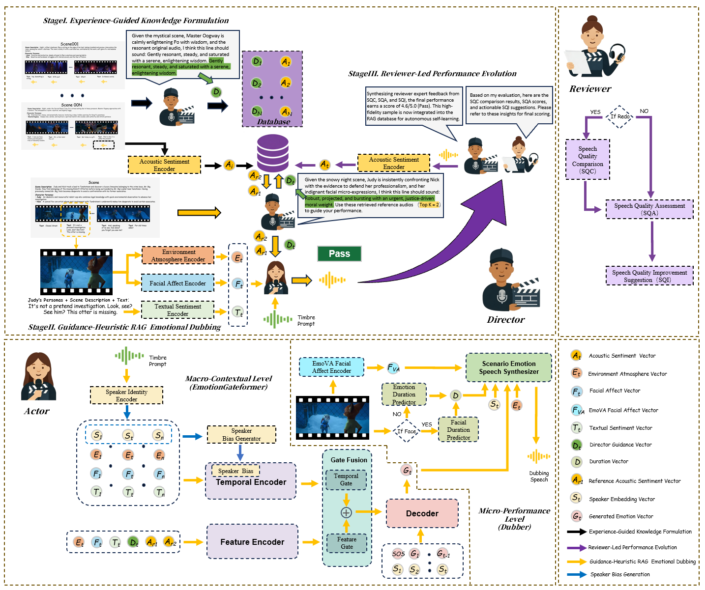

ABSTRACT
Movie dubbing aims to generate speech that aligns temporally and emotionally with video clips. Existing methods, however, often focus on isolated sentences, simplifying the complex dubbing process into fragmented workflows. This overlooks the script-driven nature of professional dubbing and fails to capture inter-character emotional dependencies and interaction tension in multi-speaker scenarios. Moreover, prior methods lack iterative refinement mechanisms essential to professional production. To address these challenges, we propose DAR-Dub, a scenario-level movie dubbing framework. Our contributions are three-fold: (1) DAR-Animation Dataset: We extend V2C-Animation from 26 to 100 movies and reorganize scripts for scenario-level modeling. We adopt the Scene Emotion Arc Average CCC (SEACCC) to evaluate global emotional consistency and propose the Speaker Emotion Continuity Trajectory (SECT) metric to assess speaker emotional transition naturalness across consecutive utterances. (2) Closed-loop Multi-agent Architecture: The framework comprises a Director, an Actor, and a Reviewer. A feedback-driven loop enables iterative refinement of performances and supports autonomous self-learning by expanding the RAG database with high-quality synthesized samples. (3) EmotionGateformer: Within the Actor agent, a two-stage dubbing paradigm simulates professional emotional cognition. The first stage, emotional brewing, fuses multimodal guidance and scenario-level context into a mixed emotional representation. The second stage leverages this internalized knowledge for utterance-level generation, ensuring naturally transitioned and dramatically expressive speech. Extensive experiments show that DAR-Dub significantly outperforms state-of-the-art methods in emotional consistency, interaction quality, and scenario-level naturalness.
MODEL ARCHITECTURE

Overview of the proposed DAR-Dub framework. The architecture comprises three stages: (I) Experience-Guided Knowledge Formulation for high-level guidance, (II) Guidance-Heuristic RAG Emotional Dubbing for speech synthesis, and (III) Reviewer-Led Performance Evolution for iterative refinement and autonomous self-learning.
Comparison with SOTA Dubbing Methods
Baselines:
1) HPMDubbing (CVPR 2023): Learning to Dub Movies via Hierarchical Prosody Models
2) StyleDubber (ACL 2024): Towards Multi-Scale Style Learning for Movie Dubbing
3) ProDubber (CVPR 2025): Prosody-Enhanced Acoustic Pre-training and Acoustic-Disentangled Prosody Adapting for Movie Dubbing
4) Authentic-Dubber (AAAI 2026): Towards Authentic Movie Dubbing with Retrieve-Augmented Director-Actor Interaction Learning
1) HPMDubbing (CVPR 2023): Learning to Dub Movies via Hierarchical Prosody Models
2) StyleDubber (ACL 2024): Towards Multi-Scale Style Learning for Movie Dubbing
3) ProDubber (CVPR 2025): Prosody-Enhanced Acoustic Pre-training and Acoustic-Disentangled Prosody Adapting for Movie Dubbing
4) Authentic-Dubber (AAAI 2026): Towards Authentic Movie Dubbing with Retrieve-Augmented Director-Actor Interaction Learning
| Sample 1 (Face) | |||||
| Ground-Truth | HPMDubbing | StyleDubber | ProDubber | Authentic-Dubber | Ours |
|---|---|---|---|---|---|
| 📜 Script: you probably forgot, but i was top of my class at the academy. | |||||
| Sample 2 (No-Face) | |||||
| Ground-Truth | HPMDubbing | StyleDubber | ProDubber | Authentic-Dubber | Ours |
|---|---|---|---|---|---|
| 📜 Script: just keep going? | |||||
| Sample 3 (Scene) | |||||
| Ground-Truth | HPMDubbing | StyleDubber | ProDubber | Authentic-Dubber | Ours |
|---|---|---|---|---|---|
Dubbing Example
| 1. Input & Guidance | 2. Dubbing Result | 3. Top-1,2 RAG References | 4. Expert Review |
|---|---|---|---|
|
📜 Target Script:
But today is a gift.
🎬 Target Arc:
Resonant, steady, and saturated with a firm, controlled lecturing tone. |
Actor Agent Output |
🔊 Retrieval Experience-Guided Knowledge:
Ref Arc:Gravelly-resonant, slow-paced, and layered with ancient, mystical wisdom.
Ref Arc:Deep-chested, steady, and radiating a somber, seasoned authority.
|
⚖️ Reviewer Agent Report
Score: 4.5 / 5.0
|
| 1. Input & Guidance | 2. Dubbing Result | 3. Top-1,2 RAG References | 4. Expert Review |
|---|---|---|---|
|
📜 Target Script:
And so what if it's true?
🎬 Target Arc:
Sharp, imposing,and radiating an undeniable authority. |
Actor Agent Output(B) |
🔊 Retrieval Experience-Guided Knowledge:
Ref Arc:Sharp, imposing, and asserting an unwavering, sovereign presence.
Ref Arc:Sharp, imposing, and projecting an absolute, unyielding mastery.
|
⚖️ Reviewer Agent Report
Score: 4.1 / 5.0
|
|
🎬 Target Arc:
Strained, tightly suppressed, and saturated with a bitter, wounded resentment. |
Actor Agent Output(A) |
🔊 Retrieval Experience-Guided Knowledge:
Ref Arc:Strained, tightly suppressed, and saturated with a bitter, wounded heartbreak.
Ref Arc:Strained, tightly suppressed, and saturated with a bitter, wounded cynicism.
|
⚖️ Reviewer Agent Report
Score: 4.7 / 5.0
📋 SQA (Speech Quality Assessment)
Think...
Answer...
Assessment:Overall, the speech demonstrates strong quality with clear intelligibility and minimal distortion, though slight background noise persists. Objectively, the dynamic range is well-balanced, and the speech rate is appropriate. Subjectively, Mamá Imelda's high, sharp tone effectively conveys her passionate and authoritative demeanor, enhancing emotional impact and engagement. In summary, the speech is natural and expressive.
|